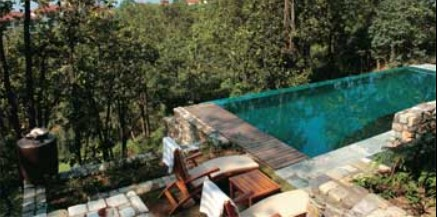

Foothills of Heaven

Read the article about this event here, at Global Konnekt
Jyoti Easwaran visits Ananda In The Himalayas, the award-winning destination spa, in her search for the best holistic approach to wellness.
March 12th, 2010
Travel manifests itself in many forms — business, pleasure, religious, adventure and routine. For me, travel has been an integral part of my learning and experiences. As a healthcare professional, I continuously explore products, destinations and solutions, therapists and systems that try to infuse an holistic approach to life. That quest was answered in my visit to Ananda In The Himalayas. As part of a healthcare project, I discovered that it had been voted The Best Destination Spa in the World. My curiosity to experience the best in this category, got the better of me and I began preparing for the journey. Travelling to the foothills of the Himalayas seemed quite a distance — but my desire to experience the grandeur of the mountains, valleys and spectacular flora and fauna of the region set my concern aside....
After an Air Arabia Flight from Sharjah to Delhi, I checked into the Tata Ginger hotel for a night; a clean, crisp room with basic amenities and a value-for-money price tag justified its popularity. The morning Shatabdi Express to Haridwar with its enjoyable Indian four-course breakfast set the mood rolling to experience Ananda. The train wound through Meerut, Saharanpur, Dehradoon, and by noon reached the historic Haridwar station — where the reception staff of Ananda were waiting for me.
During the car ride through the picturesque Garhwal region, every important detail of the route was explained by the driver for whom explaining Ananda and its environs were clearly a passion!
Ananda In The Himalayas, the luxury destination spa resort, that I soon sighted, is a retreat dedicated to restoring balance and harmonising energy through an holistic approach — incorporating the healing principles of the east and west with a specific focus on Ayurveda and harmony. Set amid 100 acres of virgin forest, Ananda features a restored Viceroy’s Palace, a world-class spa, 75 deluxe rooms and suites and three villas. The spa architecture is a confluence of Moorish and Italian renaissance style and the regal palace is an obvious reminder of the colonial era. It is frequented by the likes of Uma Thurman, Brad Pitt, the Bachchan family, Aamir Khan, and many celebrities and industrialists from across the globe.
“We ensure that right from morning until late evening and dinner, your time is well spent therapeutically,” said Dr Jitendra Varshney, the resident Ayurvedic physician at the resort. My prescribed diet was tongue tickling prepared with some very exotic ingredients. My casual mention of a very healthy recipe of bitter gourd with the chef at Ananda got noticed and the next day it was included for me as a special treat.
The spa consultation was a journey through the body form, five elements of nature and a personalised therapy and activity programme which took me to the world of jacuzzi, steam and sauna, and extremely rejuvenating signature massages. My therapists transported me to the traditional Kerala mood; ambience, refreshing oils and powders worked their way to lend a glow and tingle to my skin.
I could spot Chinese, Bahrainis, Omanis, Europeans, Russians and Indians amongst the guests at the resort. A favourite with the Russians, Ananda occasionally becomes a second home to Russian billionaires who stay at the resort for more than a month with their security and support staff.
“We have a very dedicated guest list from the Middle East — and the UAE accounts for half of the clientele from the Gulf region,” remarked Anupam Dasgupta, the affable general manager, who joined me for a lunch on a very pleasant afternoon. His personal interaction with each and every guest at the resort lends that special touch to the guests.
My treatment of abhyanga and a dose of Vedanta coupled with yoga classes in the amphitheatre amidst dancing peacocks and friendly monkeys was a treat. River rafting on the Ganges, wildlife safaris at Rajaji National park, exotic concoctions with sprouts and grilled veggies, tomato juice with celery, an array of fresh organic fruits — all these seriously did wonders to my mood and health. I also had the opportunity to watch live cooking of Ayurvedic cuisine.
I spotted a leopard outside the gates as we returned to Delhi to board the flight, and was expecting to see elephants crossing the road near the Rajaji Sanctuary. But, that possibly warrants another visit.

How different is a destination spa than other spas?
A destination spa, as the name suggests, is the real reason and purpose behind the guest visit. The whole emphasis is on the holistic spa experience in every area — the cuisine, the ambience, the activity programmes offered and, of course the spa therapies and packages. In contrast to resort spas or hotel spas, where the focus of the property will be on other areas and the spa is a secondary outlet or facility, a destination spa will have its whole concept based around the spa experience and wellness in general. As a result the guests that frequent destination spas tend to be very much in tune with this concept.
How did Ananda evolve into such an award winning resort?
Ananda is a dream child of the owners/promoters, and is a confluence of spiritual energies. The reason why it is a success today is because it is not treated as a mere business. It is more a passion with them and those are the values that have percolated into every part of Ananda and its enthusiastic team.
Ananda is not just about ‘treatments’. Ananda trains its staff all year around; for the spa training, it brings in internationally renowned trainers. We also develop our own trainers to enhance every aspect of the spa experience. The focus is on personalised service and providing guests those little special moments that make their stay memorable and, most of all, introducing guests to programmes which truly can lead to positive lifestyle changes.
We offer a lifestyle that patrons can take back with them.
Coming to Ananda In The Himalayas can be termed as a life-changing experience.
What is the USP of the resort?
It is very difficult to answer that as it is a confluence of many things… the unique location in the foothills of the Himalayas near the holy town of Rishikesh, the Ayurvedic treatments, the specialised dosha-specific Ayurvedic cuisine, yoga, Vedanta, use of indigenous products in our international range of treatments all specifically designed for Ananda… Ananda is benchmarked against the best in the world and hence it has been consecutively rated among the top 3 destination spas globally for the last 5 years.
How has the reaction of your guests been?
Ananda has managed to delight its guests, with such a large proportion returning to us it really enables us to further personalise their future visits. We have a very strong following of longer-term multiple repeat guests who really feel part of the Ananda family.
What is the type of clientele that frequents Ananda?
A wide range of nationalities and socio-economic groups, ranging from the very affluent to those looking to experience Indian culture. We have guests from Russia, the US, the UK, Germany, France, and the Middle East to name the broader categories.
Do Middle Eastern guests frequent Ananda?
Yes, we are close to Dubai… a four-hour flight arrives in Delhi and provides a very easy journey from the Middle East.
Ananda, the fact file
Accessibility
Air: Flight from Delhi to Dehradoon
Helicopter : Chartered flights from Delhi and a private Helipad at Ananda
Train : Delhi to Haridwar Shatabdi express
Road : 6 hours drive from Delhi
Ananda Spa facts
Area : 24000 sq feet area
Room details : 24 treatment rooms, 2 relaxation rooms,
Spa Boutique : Showcases a fine collection of silk, music books, skincare, cosmetics and art objects. A wide variety of herbal teas and organic food are available
Rates and Packages
Rooms : Range from 445 USD for a single night to 1720 USD for a luxury 2 bedroom villa with private pool
Wellness Packages : Start at 2790 USD rising to around 9000 USD for periods ranging from 5 nights to 14 nights